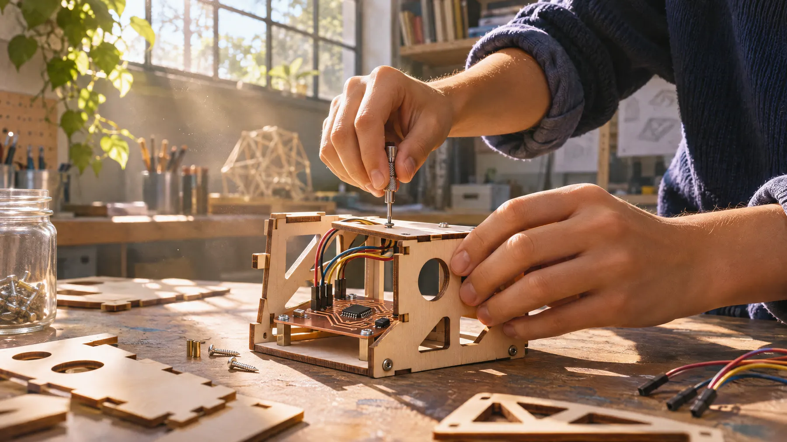
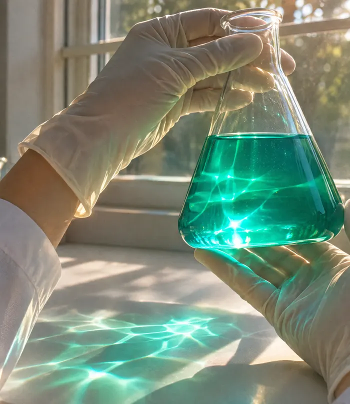
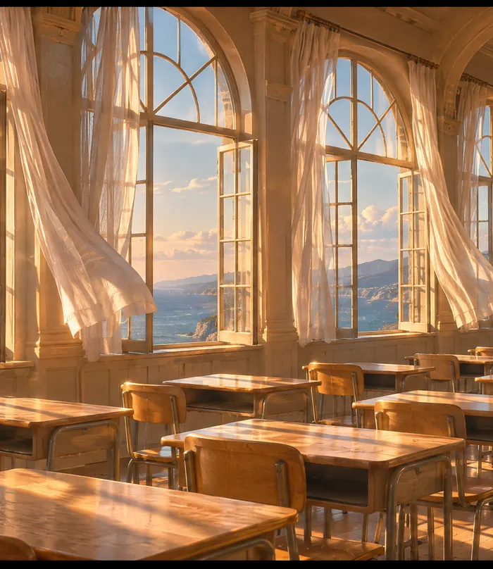

Ages 11 to 16 · Middle School
Build the idea,
then the thing.
Built on the framework of the IB Middle Years Programme: concepts over memorisation, and every subject tied to the real world.
- Design + Technology.
- A dedicated pillar of the campus. Students design, prototype and build.
- Learning how to learn.
- The habits of a capable student, taught inside every subject.
A project of their own.
The final year ends with a personal project: a challenge each student chooses, a finished product, and a written report on how they got there.
Ages 16 to 18 · Three pathways
Choose the diploma,
not the school.
At sixteen, students choose the route that fits where they are going next, without changing schools to take it.

IB Diploma
Six subjects, three at higher level, around a core of the Extended Essay, Theory of Knowledge, and Creativity, Activity, Service.
- 100%IB Diploma pass rate
- 4,000words in the Extended Essay, a first piece of real research
- 6subjects, three at higher level
American Diploma
A recognised American High School Diploma, built for students aiming at universities in the United States and around the world.
- USand international university admissions
- +A flexible, credit-based pathway
- +Arabic and French continue alongside

Lebanese Programme
Taught alongside the international tracks, in line with the Lebanese national curriculum framework.
- LBThe national curriculum framework
- +The same campus and the same teachers
Undecided at fifteen? Students ready for more can move from the American Diploma to the IB after Grade 10.